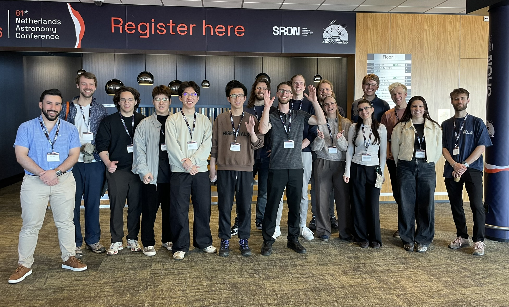

Masterstudents at the Netherlands Astronomers Conference 2026
The 81st Netherlands Astronomers Conference (NAC) took place from 11–13 May 2026 at Hotel Zuiderduin in Egmond aan Zee. Thanks to financial support from the Jan van Paradijs Fund, 14 MSc students from the Anton Pannekoek Institute (University of Amsterdam) were able to attend the conference and present the results of their research projects. Their contributions are listed below.
The conference was a great success and a highly valuable experience for the MSc students, many of whom were attending a scientific conference for the first time. No fewer than eight students were nominated for the prestigious NAC Poster Prize, and one student was awarded second place.
We are very grateful to the Jan van Paradijs Fund for its support. This contribution enabled young and talented researchers to present their work, engage with the Dutch astronomical community, and gain experience that will be important for their future scientific careers. Support from the Fund helps ensure that talented young researchers can take their first steps into the scientific community and develop into the astronomers of tomorrow.
Students and contributions
- Qianhang Chenposter
- A Cosmic Cannibal in X-rays: Probing the Ionized Disk Atmosphere of 4U 1916–053 with XRISM/Resolve and XMM–Newton
- Pepijn van Deldenposter
- A Bayesian View of AGN Accretion States from X-ray Power Spectral Density Shapes
- Ylvie Gerritsmaposter
- Astrophysical jet precursors: radiation-hydrodynamic simulations of laboratory-scaled plasma flows
- Alexander Hoogerbrugposter
- Proto-NUX: Instrument Design and Technical Feasibility of a Ground-Based Near-UV Telescope
- Derek Luijerposter
- SPH simulations of dust aggregate collisions in protoplanetary discs
- Daan Meuwissenposter
- Neutron stars, jets and nebulae: finding evidence of p-nuclei with AI
- Onė Mikulskytėposter
- New mass constraints on circumbinary planets: Kepler-38 b and Kepler-1647 b
- Adis Murićposter
- Neutron Star Boundary Layer Physics
- Tia Nolanplenary talk
- The First Search for Ultracool Dwarfs using the CHIME Radio Telescope
- Guru Partap Khalsaposter
- Self-consistent binary neutron star mergers with GPU-accelerated GRMHD using FUKA and GRaM-X
- Rembrand Ruppertposter
- Massive Stars at Extreme Heights Above the Galactic Plane
- Niels Swinkelsposter
- Numerical Simulations of Aggregate Growth in Laboratory Environments
- Thijn Swinkelsposter
- Classification of resolved sources in TraP output
- Haowen Siposter
- Leptons or Hadrons? What Powers V4641 Sgr at Very High Energies
- Katerina Theodoridouposter
- Modeling gravitational wave capture in AGN disks
